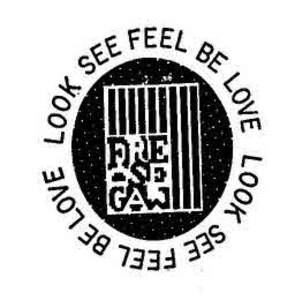

Trade Mark Journal No.2025/014 4 April 2025
UK00004172036 11 March 2025 (3,9,14,18,21,25,29,30,35,43)

- Class 3
- Non-medicated cosmetics; toiletry preparations; non-medicated dentifrices; perfumery; essential oils; cosmetics and makeup; lip balms; nail polishes; cosmetic preparations for skincare, nailcare and haircare; cosmetic creams, masks, milks, lotions, soaps and gels for the face, hands and body; incense; fragrances; household fragrances; personal deodorants; personal antiperspirants.
- Class 9
- Eyeglasses; sunglasses; eyeglasses cases; sunglasses cases; eyeglass cords; eyeglass lanyards; eyeglass chains; eyeglass frames; eyeglass cases; sunglass cases; cases and covers for portable music players, digital media players, mobile phones, smartphones, tablet computers, laptops, portable computers and personal digital assistants; earphones; headphones; earbuds; earphone cases; headphone cases; earbud cases; stands and holders for mobile phones, smartwatches, smartphones, laptops and tablet computers; USB cables and USB adapters; lanyards and straps for smartwatches, mobile phones, and smartphones; docking stations for smartwatches, mobile phones, smartphones, digital music players, laptops and tablet computers; audio speakers; smart speakers; wireless speakers; power banks; USB chargers; battery chargers for smartwatches, mobile phones, smartphones, laptops and tablet computers; ring lights; portable multimedia projectors; portable video projectors; portable slide projectors; portable computer printers; photo printers; instant cameras; smartwatch bands; smartwatches; electrical plugs; bags adapted for laptops; stylus pens for touchscreens.
- Class 14
- Jewellery; watches; cuff links; tie pins; tie clips; key rings; jewellery boxes; watch straps.
- Class 18
- Bags; Luggage and carrying bags; purses; carry-all bags; leather and imitation leather bags; wallets; shoulder bags; tote bags; athletic bags; luggage or baggage tags; business card cases and pocket wallets; cosmetic bags; shopping bags.
- Class 21
- Beverage glassware; cups; mugs; saucers; flasks; trays for domestic purposes; dishes; pitchers; containers for household and kitchen use; tea cosies; tumblers; holders for tumblers; bottles; crockery; figurines of porcelain, ceramic, earthenware, or glass; plates; bowls; coasters, not of paper and other than table linen.
- Class 25
- Clothing; headwear; footwear; tops; bottoms; casual clothing; shirts; blouses; sweatshirts; sweaters; t-shirts; vests; jackets; coats; blazers; pants; jeans; leggings; tights; shorts; skirts; dresses; tunics; jumpsuits; dungarees; overalls; coveralls; suits; waistcoats; ties; evening wear; salopettes; weather resistant outer clothing; sleepwear; loungewear; bras; lingerie; underwear; sports clothing; athletic clothing; swimwear; caps; hats; belts; gloves; mittens; scarves; socks; hosiery; shoes; casual footwear; leisure footwear; athletic footwear; beach footwear; waterproof footwear.
- Class 29
- Candied fruits; candied fruit snacks; candied nuts; processed nuts; roasted nuts; seasoned nuts; snack mix consisting of dehydrated fruit and processed nuts; fruit-based snack foods; dried fruit; preserved fruit; prepared seeds; prepared nuts; nut-based snack foods.
- Class 30
- Coffee; confectionary; sweets [candy]; candy bars; chocolate; chocolate-based snack foods; cereal based snack foods; liquorice; sugared nuts; grain-based snack foods; popcorn; cereal bars; chewing gum; biscuits (cookies); cakes; nougat; energy and protein bars.
- Class 35
- Retail and online retail store services in relation to clothing, headwear, footwear, eyewear, jewellery, gifts, cosmetics, fragrances, fashion accessories, bags, confectionary, sweets and snacks; information services for the aforesaid services.
- Class 43
- Services for providing food and drink; cafés; restaurants; bar services; preparation of food and beverages; takeaway food and beverage services; information services for the aforesaid services.
Aritzia LP
Representative: Burges Salmon LLP